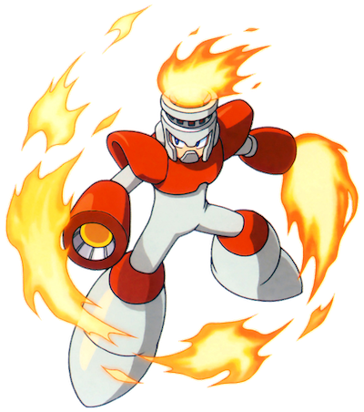

This is the main walkthrough section of the website. You can play through the levels in the order suggested in the table of contents below; there will be buttons at the bottom of each section to take you to the next and previous parts. Alternatively, you can click on one of the levels in the table if you need help with a specific level.
Table of Contents
F) Fire Man's Stage
Reaching The Boss
Things are really heating up now... ha. HA. In this level, you'll be using the new Ice Slasher for some things, but try to be sparing with it as you'll also need it to face the boss. This is your typical 'hot and dangerous' stage that wouldn't feel out of place in the last world of a 2D Mario game. It takes place over a giant insta-death lava pit and features flamethrowers, of course.
In the starting area, go up the nearby ladder to find a Screwdriver enemy that we haven't seen since Cut Man's factory. They still shoot the 5-directional beams that aren't easy to dodge with the low ceiling here. Just mash shoot to take it out before they damage you too much. Take the left ladder up. Another Screwdriver here that's much easier to dodge because you can actually jump high. You can hurt them when they're in the ground by the way; it's just harder because their hitbox is smaller, but shooting them from the right place on top of a ladder will do the trick. Head right and keep taking these out, looking out for shots from the one below as its beams can travel through the ground/ceiling, and start taking these ladders down to the bottom floor where we started, but on the other side now.
Don't rush over the pit to the right because three flameballs called Changkeys will emerge from the lava. They'll then start slowly floating down, splitting into three random directions, so make sure not to jump when one is directly above your head. They will keep coming out of the lava again afterwards so don't think you're totally safe. Jump over their birthing place to reach a small platform that you should stand on the left edge of to avoid being scorched by a flamethrower. You can use the Ice Slasher to freeze the flamethrower, making it solid for you to jump on and get past with ease. Yes, the fire becomes frozen... not sure how that works. If you don't freeze it, use the tiny window of time when the flames retract to jump over to the platform with the ladder in the lower right corner of the room, and climb the ladder. Look out for the Changkeys as they float down (they look VERY similar to a boss from Super Mario Bros USA called Fryguy) while you ascend. The platform over to the left up here has a large health pickup. The gap looks too wide but you can in fact jump over to it; I just discovered this while writing the guide, thanks to the Legacy Collection's rewind button. 'Course, it's a lot less risky to just use the Magnet Beam to make a platform to it, instead of possibly falling into the flames below. When you're ready, take the upper right ladder to the next screen.
Up here, we have two small health pickups, each guarded by a flamethrower. Go left first and simply use good timing to jump over to the bottom pickup, then climb the two ladders to the right and use a big jump here to get the top one. Of course, you don't need to collect them if your health is full but odds are you've taken a bit of damage. Climb the top-left ladder.
Now we'll be moving right again, so dodge the first flamethrower and drop into the cosy little space before the second one. Time your way past the second one and get into the narrow path beneath the floating grey mass with the two large blue weapon refills on top. To the right are two horizontal flame devices; these are just like the electrical ones we had to dodge a lot in Elec Man's stage. Obviously, you need to wait until the flame retracts to get past them, but you should know that the tiny flame that protrudes from the left side while they're in their 'off' mode can still hurt you, so don't get close. Watch them for a moment to learn their pattern and time your way past the first one, to get onto the single floating block where you'll be safe to wait for a moment before you jump up past the second flame. If you want the weapon refills, either use a daring jump or the Magnet Beam to get over the flame and then use the Magnet Beam to make some steps up to where they are on top of the grey box.
When all is said and done, continue to the right and use the block below the gap to get across another sideways flamethrower. Dodge just two more vertical ones, remembering you can freeze them if you really need to, and drop down to the right, grabbing the three small health refills before you go down the ladder.
Don't drop straight down from the ladder since there's a flamethrower below; instead, hold left as you let go of the ladder. Dodge another flame and look out for Changkeys. The small pit here that's roughly in the middle of the screen looks like a death pit but there's actually ground below, just out of sight, and you can stand inside it. They changed that in the Wily Wars remake of this game for Genesis though... take the left ladder down.
Definitely don't drop straight down from the ladder this time because you'll fall straight into the lava and die. Just make sure you land slightly to the right but not so far right that you hit the flamethrower. You want to land precisely on the left side of the platform. Time past the flames and jump up to the next platform, again landing on the left side of it. The Changkeys here are frustrating as they can push you into the lava. They can be frozen with the Ice Slasher though, like most enemies. Time past one more flamethrower and jump to the thin platform over the lava, then climb up the ladder attached to it. I feel like like I'm saying 'ladder' a hell of a lot here, just like in Elec Man's level. Follow the platform with the cute little railing to the right and make a big leap over to a lower platform. Again, climb ladder, follow railing, drop down to the left part of the platform with the flamethrower. I know I'm being pretty redundant here... but it's all for the sake of making a very accurate walkthrough. Use our well-practiced techniques to get past these two flamethrowers, and head up the tall ladder at the right to the next screen.
On this new screen, climb the left ladder and over here we're going to need to use the Magnet Beam. This isn't the part of the game that you can't get past without the Beam, as you can progress without it but you'll pretty much have to take damage. Make a platform on the left wall to act as a step that lets you bypass the rapid barrage of flames and jump up to the ladder at the top. If you don't have it, you're gonna have to run through the two areas with the black background where the waves of flame are passing through. You can try your best not to get hit but I'm convinced that it's impossible to get past unscathed, so just take the hits and continue. Up the top-left ladder we go.
In this wide-open area, we'll see a new enemy: Killer Bombs! Let's be honest; these guys are Bullet Bills from Mario! Really, what is it with this level and similarities to Mario? That's not a complaint! I like it. There are two things about these enemies that makes them different to the Bills though: one, they travel in a wavy pattern, like the Pepes from Ice Man's stage, and also, they explode. Well, only if you shoot them, but it's probably better to do that than risk them moving in and hurting you. Just make sure you're not next to them when they blow up. Freezing them in midair with ice also works quite well. It lasts for about two seconds.
Whether you kill or avoid them, jump up the big grey steps to get on top of an area that looks very similar to the place at the start of the level, complete with spike traps nestled within the different levels. Note: you could use the Cutter to kill the spike traps so you can focus on the Killer Bombs that we didn't have to deal with last time, but the Thunder Beam works amazing here, as it can kill them and the Bullet Bill lookalikes all at once with its three beams. When you've gone down the two ladders to the bottom path, head right and climb the tall ladder to reach a large weapon refill for the weapon of your choice (use it for the ice weapon if you've been using it a lot since we'll need it for the upcoming boss fight). After the ladder, jump over the small gaps in the lava, ensuring that a Changkey doesn't hit you and push you to your death, and, carefully navigating your way past 2 final flamethrowers, head into that boss corridor.
In the short run up to the boss room, we'll have a few Screwdrivers on the ceiling. Either jump and shoot to kill them or freeze them with ice. Speaking of the Ice Slasher, equip it now and head into the boss room.
Boss Fight: Fire Man
Fire Man is weak to ice... at first I really couldn't see the logic behind this, but I guess it's because his body instantly melts the ice into water, and the water puts out his fire? Regardless, you'll want to use the Ice Slasher to keep firing at him from across the room. If you have a health bar that's (almost) full, I'd say you're safe to just rapidly mash the shoot button to get the ice to him and not even worry about his attacks, as you should be able to kill him quickly enough that you won't get damaged enough that you die. Otherwise, you'll need to know how to avoid his attacks.
His main method of hurting you is to move towards and away from you while launching large waves of flame at you. You can jump over them with quick succession, making sure you land on the ground between each one and then jumping again as he'll fire them quite fast. This is fairly similar to Ice Man's fight in that respect, in that you need to time jumps correctly in order to avoid oncoming waves. However, the difference here that makes things slightly less comfortable is that after each 'firewall' (he is a robot, maybe he's got built-in antivirus software?) there'll be a little flame left behind where you were standing. This means you can't just stand in one place and jump; you have to move around as well or you're screwed. It may help if you can get behind him at some points as he's always running away from you when you get close.
If you've got no ice to spare, the Mega Buster and Rolling Cutter do a bit more damage to him than the rest of the weapons. Overall, I'd say Fire Man's a middle-tier boss; not too easy but definitely manageable, especially with high health.
When you've doused him for good, get the sphere and claim his weapon.
New Weapon: Fire Storm
This is our first (and only) weapon that is not only for attacking but also serves as a defensive shield! The shield will both protect you and damage any enemy that touches it. Using this weapon will also shoot out a fireball in front of you. Neat.
Now, onto the last robot master... Bomb Man.